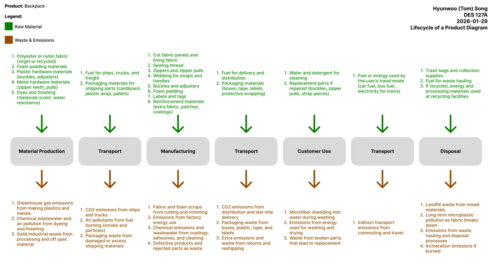

DES 127A · SYSTEMS DESIGN · COURSEWORK
Ecodesign Strategy Wheel
A lifecycle-informed redesign exercise proposing more sustainable backpack materials, manufacturing, repair, and end-of-life options.

01 / LIFECYCLE
Think beyond the finished product
The coursework maps the environmental impacts of a backpack and proposes approaches such as recycled materials, repairable parts, optimized cutting layouts, and take-back programs.

ORIGINAL MATERIALS